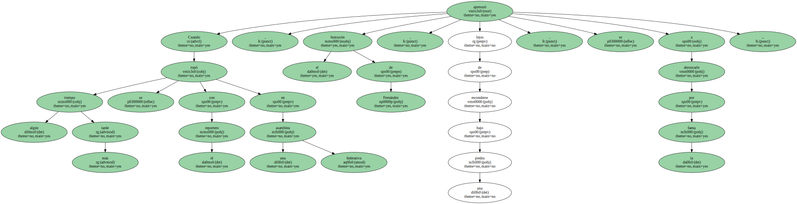
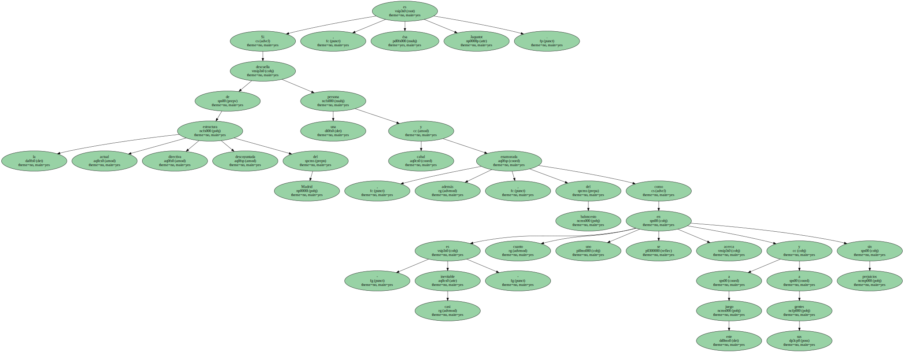
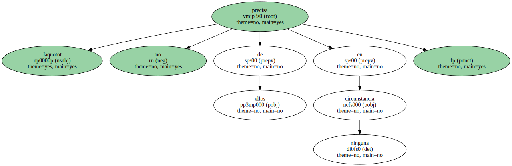
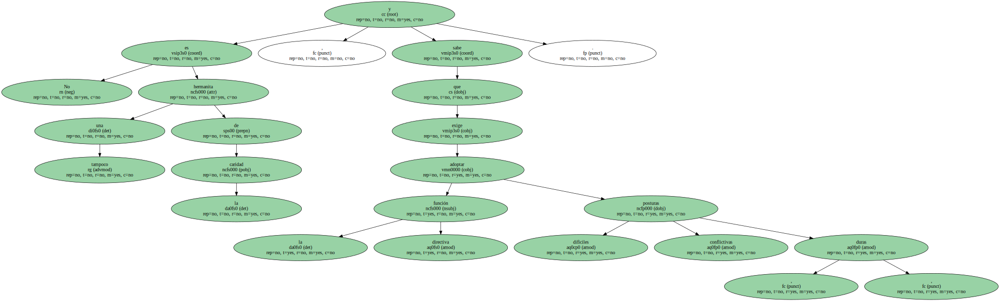
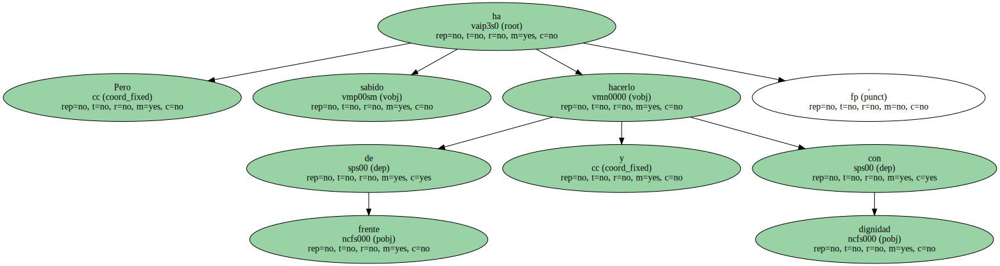
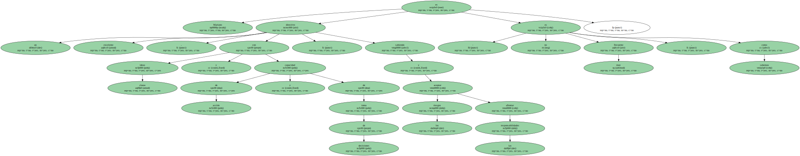
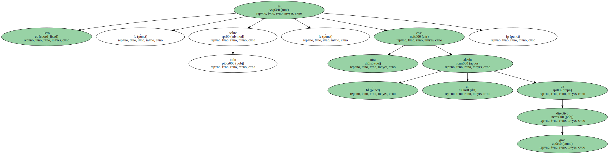
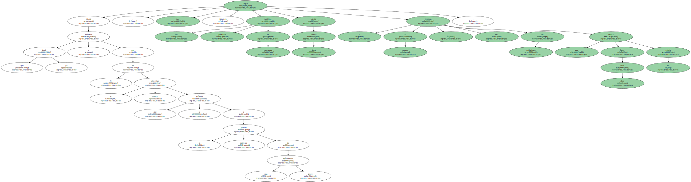

Cuando algún tiempo más tarde se topó con el reportero en una asamblea federativa , el bravucón de Fernández , lejos de esconderse bajo una piedra , se apresuró a abroncarle por la faena.
Frente a semejante personaje , un " advenedizo " como Mariano Jaquotot redime por fortuna la figura del directivo de baloncesto español , tan mal servida por los personajillos , sobre todo esos caciques provincianos disfrazados de mecenas.
Mariano , al que muy pocos veteranos del mundillo conocíamos y que ha sabido ir granjeándose el respeto de todos y la amistad de muchos , se ha revelado como la mejor aportación de la era Mendoza al Real Madrid.
Si de la actual estructura directiva descoyuntada del Madrid descuella una persona cabal y , además , enamorada del baloncesto - como es casi inevitable en cuanto uno se acerca a este juego y a sus gentes sin prejuicios - , ésa es Jaquotot.
No se trata de un cumplido vaporoso y obsequioso.

Jaquotot no precisa de ellos en ninguna circunstancia.
No es tampoco una hermanita de la caridad , y sabe que la función directiva exige adoptar posturas difíciles , conflictivas , duras.
Pero ha sabido hacerlo de frente y con dignidad.
Pues bien , ya es triste ironía que el hombre , joven y vital , que ha mantenido a flote el baloncesto blanco a través de las tragedias y los desfallecimientos , con una visión de futuro y un espíritu empresarial y deportivo moderno , esté ahora en una lucha terrible contra la enfermedad : como si el sino de la desdicha que desde 1989 persigue a esa sección se dirigiera ahora a una de las pocas personas que se han alzado contra él para invertir una tendencia imparable a la destrucción.
Mariano es un excelente directivo , con ideas claras y capacidad de acción y de toma de decisiones , sabiendo aceptar los riesgos y afrontar las responsabilidades : no es muy frecuente , como sabemos.
Pero es , sobre todo , otra cosa : un alevín de gran directivo.
A veces sorprendido en su buena fe ( la saga / fuga lamentable de Ricardo Peral ) , a veces defraudado por hombres cuya permanencia en el equipo estaba más que cuestionada y que él ha defendido por un concepto muy clásicamente madridista de fidelidad a los veteranos y los colores , Mariano ha ido aprendiendo las lecciones tanto de los triunfos como de los reveses.
Esa experiencia valiosísima debe servirle para dar más pasos adelante.
Ahora que podemos decir , ya que él es el directivo blanco que se enfrenta a la prueba suprema de una grave enfermedad , nos llegan también las primeras noticias de esperanza desde Nueva York : al menos , una ventana de optimismo que hace diez días parecía no existir.
